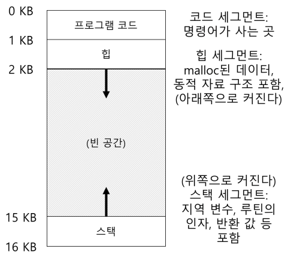
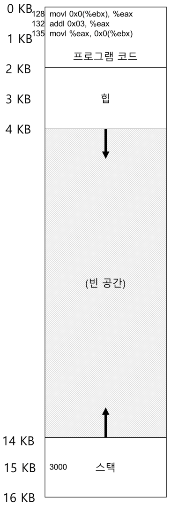
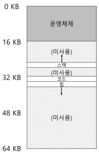
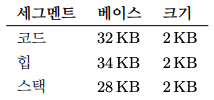
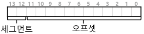
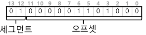
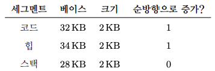
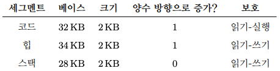

1. 주소 공간의 개념
1.1 초기 시스템
- 메모리 관점에서 초기 컴퓨터는 많은 개념을 사용자에게 제공하지 않았다. 하지만, 시분할 시스템이 대중화 되면서 운영체제에게 새로운 요구 사항이 부과되었다. 여러 프로그램이 메모리에 동시에 존재하려면 보호(protection)가 중요한 문제가 된다.
- 한 프로세스가 다른 프로세스의 메모리를 읽거나 혹은 더 안좋게는 쓸 수 있는 상황이 있어선 안된다.
1.2 주소 공간
- 위 문제의 위험에 대비하기 위해 운영체제는 사용하기 쉬운(easy to use)메모리 개념을 만들어야 한다.
- 이 개념이 주소 공간(address space)이다.
- 주소 공간은 실행 프로그램의 모든 메모리 상태를 갖고 있다.
- 프로그램의 코드(code, 명령어): 메모리에 존재해야 하고 따라서 주소 공간에 존재한다.
- 스택: 함수 호출 체인 상의 현재 위치, 지역 변수, 함수 인자와 반환 값 등을 저장하는 데 사용된다.
- 힙: 동적으로 할당되는 메모리를 위해 사용된다.

- 위의 그림은 주소 공간의 예이다.
- 위의 그림처럼 실제로 프로그램이 물리 주소 0에서 16KB 사이에 존재하는 것은 아니다.실제로는 임의의 물리 주소에 탑재된다. 운영체제가 해당 일을 할 때 메모리를 가상화(virtualizing memory)한다고 말한다.
- 즉, 메모리 가상화는 프로그램은 가상화된 주소를 사용하고 운영체제는 이 가상 주소를 실제 물리 메모리 주소로 변환하는 방식의 메커니즘을 가진다.
1.3 가상 메모리 시스템(VM)의 목표
- 투명성(transparency): 운영체제는 실행 중인 프로그램이 가상 메모리의 존재를 인지하지 못하도록 가상 메모리 시스템을 구현해야 한다.
- 효율성(efficiency): 운영체제는 가상화가 시간과 공간 측면에서 효율적이도록 해야 한다.
- 보호(protection): 운영체제는 프로세스를 다른 프로세스로부터 보호해야 하고 운영체제 자신도 프로세스로부터 보호해야 한다.
- 보호 성질을 이용하여 프로세스들을 서로 격리(isolate)시킬 수 있다.
- 메모리를 가상화하기 위해 필요한 기본적인 기법과 정책이 있다.
2. 주소 변환의 원리
- 메모리 가상화에서도 CPU 가상화 부분에서 제한적 직접 실행 기법과 비슷하게 약간의 하드웨어 지원을 받아 효율적인 가상화 제공 전략을 추구한다.
- 메모리 가상화를 제공하는 동시에 효율성과 제어 모두를 추구한다.
- 효율성을 높이려면 하드웨어 지원을 활용할 수밖에 없다.
- 제어는 응용 프로그램이 자기자신의 메모리 이외에는 다른 메모리에 접근하지 못한다는 것을 운영체제가 보장하는 것을 의미한다.
- 마지막으로, 유연성(flexibility) 측면에서 VM 시스템에서 프로그래머가 원하는 대로 주소 공간을 사용하고, 프로그래밍하기 쉬운 시스템을 만들어야 한다.
- 주소 변환(address translation): 하드웨어 기반 주소 변환(hardware-based address translation)이라고도 하는 기법은 프로그램의 모든 메모리 참조를 실제 메모리 위치로 재지정하기 위하여 하드웨어가 주소를 변환한다.
- 정확한 변환이 일어날 수 있도록 하드웨어를 셋업하기 위해 운영체제가 관여해야 한다. 운영체제는 메모리의 빈 공간과 사용 중인 공간을 항상 알고 있어야 하고, 메모리 사용을 제어하고 관리한다.

- 위의 그림은 프로세스와 그 주소 공간이다.
2.1 동적(하드웨어 기반) 재배치: base-bound
- 베이스와 바운드(base and bound): 이 기술은 동적 재배치(dynamic relocation)라고도 한다.
- 이 기술은 각 CPU마다 2개의 하드웨어 레지스터가 필요하다. 하나는 베이스(base)레지스터, 다른 하나는 바운드(bound) 레지스터 혹은 한계(limit) 레지스터라고 불린다.
- 베이스 레지스터 동작 방법
- 운영체제가 프로그램이 탑재될 물리 메모리 위치를 결정하고 베이스 레지스터를 그 주소로 지정한다.
- physical address = virtual address + base <- 방법으로 프로세서에 의해 변환된다.
- 프로세스가 생성하는 메모리 참조는 가상 주소이다. 하드웨어는 베이스 레지스터의 내용을 이 주소에 더하여 물리 주소를 생성한다.
- 프로세스가 생성하는 메모리 참조는 가상 주소이다. 하드웨어는 베이스 레지스터의 내용을 이 주소에 더하여 물리 주소를 생성한다.
- 가상 주소에서 물리 주소로의 변환이 주소 변환이라고 부르는 바로 그 기술이다.
- 이 주소의 재배치는 실행 시에 일어나고, 프로세스가 실행을 시작한 이후에도 주소 공간을 이동할 수 있기 때문에, 동적 재배치(dynamic relocation)라고도 불린다.
- 바운드 레지스터는 보호를 지원하기 위해 존재한다. 프로세서는 먼저 메모리 참조가 합법적인가를 확인하기 위해 가상 주소가 바운드 안에 있는지 확인한다.
- 바운드 레지스터의 정의 방법
- 주소 공간의 크기를 저장하는 방식
- 주소 공간의 마지막 물리 주소를 저장하는 방식
- 주소 변환에 도움을 주는 프로세서의 일부를 메모리 관리 장치(memory management unit,MMU)라고 부르기도 한다.
2.2 하드웨어 지원
하드웨어 요구사항
- 특권 모드
- 사용자 모드 프로세스가 특권 연산을 실행하는 것을 방지하기 위해 필요
- 베이스/바운드 레지스터
- 주소 변환과 범위 검사를 지원하기 위하여 CPU 당 한 쌍의 레지스터가 필요
- 가상 주소를 변환하고 범위 안에 있는지 검사하는 능력
- 주소 변환과 범위 검사를 위한 회로. 매우 간단함
- 베이스/바운드를 갱신하기 위한 특권 명령어
- 프로그램 시작 전에 운영체제가 베이스와 바운드 레지스터 값을 지정할 수 있어야 함
- 예외 핸들러 등록을 위한 특권 명령어
- 운영체제가 예외 처리 코드를 하드웨어에게 알려줄 수 있어야 함
- 예외 발생 기능
- 프로세스가 특권 명령어 실행을 시도하거나 범위를 벗어난 메모리의 접근을 시도할 때 예외를 발생시킬 수 있어야 함
2.3 운영체제 이슈
- 베이스와 바운드 방식의 가상 메모리 구현을 위해서 운영체제가 반드시 개입되어야 하는 중요한 세 개의 시점이 존재한다.
- 프로세스가 생성될 때 운영체제는 주소 공간이 저장될 메모리 공간을 찾아 조치를 취해야 한다.
- 새로운 프로세스가 생성되면 운영체제는 새로운 주소 공간 할당에 필요한 영역을 찾기 위해 빈 공간 리스트(free list) 자료 구조를 검색해야 한다.
- 프로세스가 종료할 때, 즉 정상적으로 종료될 때 또는 잘못된 행동을 하여 강제적으로 죽게될 때 프로세스가 사용하던 메모리를 회수하여 다른 프로세스나 운영체제가 사용할 수 있게 해야 한다.
- 운영체제는 문맥 교환이 일어날 때에도 몇가지 추가 조치를 취해야 한다.
- 운영체제는 프로세스 전환 시 베이스와 바운드 쌍을 저장하고 복원해야 한다.
- 운영체제가 실행중인 프로세스를 중단시키기로 결정하면 운영체제는 메모리에 존재하는 프로세스 별 자료 구조 안에 베이스와 바운드 레지스터의 값을 저장해야 한다.
- 이 자료 구조는 프로세스 구조체(process structure) 또는 프로세스 제어 블럭(process control block, PCB)라고 불린다.
- 운영체제는 예외 핸들러 또는 호출된 함수를 제공해야 한다.
- 프로세스가 생성될 때 운영체제는 주소 공간이 저장될 메모리 공간을 찾아 조치를 취해야 한다.
2.4 주소변환(바운드 베이스) 요약
- 주소 변환이라고 알려진 가상 메모리 기법을 통해 제한적 직접 실행의 개념을 확장하였다.
- 주소 변환을 사용하면 운영체제는 프로세스의 모든 메모리 접근을 제어할 수 있고 ,접근이 항상 주소 공간의 범위 내에서 이루어지도록 보장할 수 있다.
- 베이스 바운드, 즉 동적 재배치는 비효율적이다. 재배치된 프로세스는 스택과 힙 사이의 공간이 단순히 낭비되고 있다. 즉 내부 단편화(internal fragmentation)이 발생한다.
- 이를 해결하기 위해 베이스 바운드를 일반화한 기법 세그멘테이션(segmentation)을 사용한다.
3. 세그멘테이션
- 베이스와 바운드 방식은 메모리 낭비가 심하기 때문에 유연성이 없다.
3.1 세그멘테이션: 베이스/바운드(base/bound) 의 일반화
- MMU에 하나의 베이스와 바운드값이 존재하는 것이 아니라 세그멘트(segment)마다 베이스와 바운드 값이 존재한다.
- 세그멘트는 특정 길이를 가지는 연속적인 주소 공간이다: 코드, 스택, 힙의 세 종류의 세그멘트가 있다.

- 위의 그림은 물리 메모리에 세그멘트 배치를 한 그림이다.

- 세그멘트의 사이즈는 바운드 레지스터와 일치한다.(위의 그림)
3.2 세그멘트 종류의 파악
- 하드웨어는 변환을 위해 세그멘트 레지스터를 사용한다.

- 일반적인 접근법으로는 가상 주소의 최상위 비트 몇 개를 세그멘트 종류를 나타내는데 사용하는 것이다.(위의 그림)
- 최상위 2비트가 00이면, 하드웨어는 가상 주소가 코드 세그멘트를 가리킨다.
- 최상위 2비트가 01이면, 하드웨어는 주소가 힙 세그멘트라는 것을 인지한다.

- 위의 그림처럼 하드웨어는 세그멘트 레지스터를 파악하는 데 처음 2비트를 이용하고 세그멘트 오프셋으로 다음 12비트를 취한다.
- 오프셋에 베이스 레지스터 값을 더하여 하드웨어는 최종 물리 주소를 계산한다.
- 오프셋에 베이스 레지스터 값을 더하여 하드웨어는 최종 물리 주소를 계산한다.
- 특정 주소의 세그멘트를 하드웨어적으로 파악하는 다른 방법이 있다.
- 묵시적(implicit) 접근 방식에서는 주소가 어떻게 형성되었나를 관찰하여 세그멘트를 결정한다.
- ex) 주소가 프로그램 카운터로부터 생성되었다면 코드 세그멘트, 주소가 스택 또는 베이스 포인터에 기반을 둔다면 스택 세그멘트
- 묵시적(implicit) 접근 방식에서는 주소가 어떻게 형성되었나를 관찰하여 세그멘트를 결정한다.
3.3 스택
- 스택 세그멘트는 다른 세그멘트들과는 반대 방향으로 확장된다.(낮은 주소 방향으로 확장)
- 위의 이유로 인해 간단한 하드웨어가 추가로 필요하다.
- 베이스와 바운드 값뿐 아니라 하드웨어는 세그멘트가 어느 방향으로 확장하는지도 알아야 한다.

3.4 공유 지원
- 세그멘테이션 기법이 발전함에 따라 시스템 설계자들은 간단한 하드웨어 지원으로 새로운 종류의 효율성을 성취할 수 있다는 것을 깨달았다.
- 메모리를 절야갛기 위해 때로는 주소 공간들 간에 특정 메모리 세그멘트를 공유하는 것이 유용하다.
- 특히, 코드 공유가 일반적이며, 현재 시스템에서도 광범위하게 사용 중이다.
- 공유를 지원하기 위해, 하드웨어에 protection bit의 추가가 필요하다.
- protection bit를 세그멘트마다 추가하여 세그멘트를 읽거나 쓸 수 있는지 혹은 세그멘트의 코드를 실행시킬 수 있는지를 나타낸다.

- 위의 그림은 세그멘트 레지스터 값(보호 정보 포함)이다.
3.5 운영체제의 지원
- 시스템이 각 주소 공간(세그멘트) 단위로 가상 주소 공간을 물리 메모리에 재배치하기 때문에, 전체 주소 공간이 하나의 베이스-바운드 값을 갖는 방식에 비해 물리 메모리를 절약할 수 있다.
- 스택과 힙 사이의 사용하지 않는 공간에 대해서 할당할 필요가 없기 때문
- 세그멘테이션의 도입을 위해서는 운영체제가 몇가지 문제를 해결해야 한다.
- 문맥교환
- 세그멘트 레지스터의 저장과 복원
- 세그멘트 크기의 변경
- 미사용 중인 물리 메모리 공간의 관리
- 세그멘트들이 많아지면 물리 메모리가 빠르게 작은 크기의 빈 공간들로 채워진다. 이 작은 빈 공간들은 새로이 생겨나는 세그멘트에 할당하기도 힘들거니와 기존 세그멘트를 확장하는 데에도 도움이 되지 않는다. 이를 외부 단편화(external fregmentation)라고 부른다.
- 문맥교환
-
위의 그림은 압축 전과 압축 후의 메모리 상태이다.
- 이를 해결하는 간단한 방법은 빈 공간 리스트를 관리하는 알고리즘을 사용하는 것이다.
- 빈 공간 관리 알고리즘은 할당 가능한 메모리 영역들을 리스트 형태로 유지한다.
- 최적 적합(best-fit), 최악 적합(worst-fit), 최초 적합(first-fit), 버디 알고리즘(buddy algorithm) 등의 방식이 존재한다.